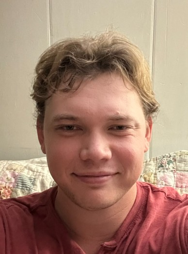
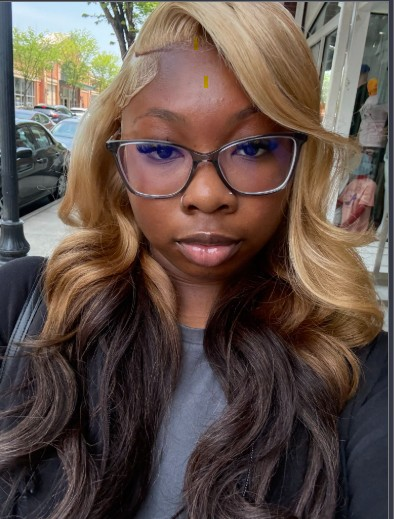
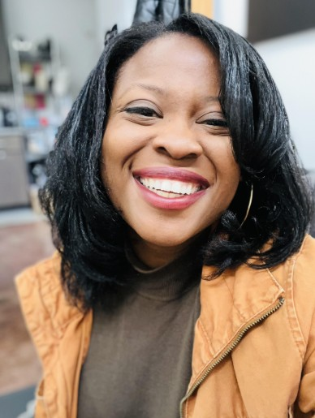
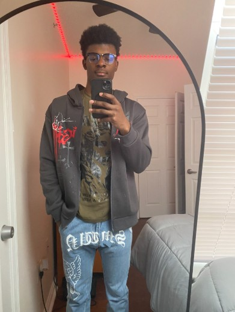
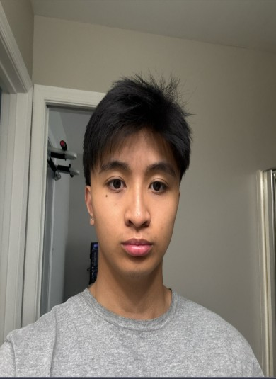
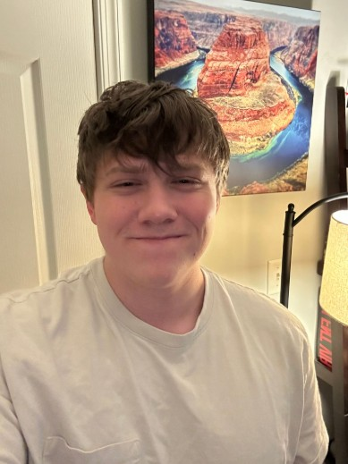
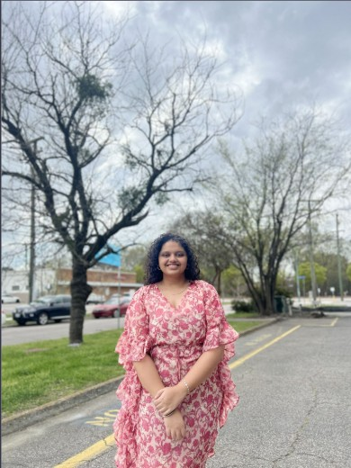

Welcome to EduQuest
Welcome to EduQuest, a learning platform designed to make screen time more meaningful for children. EduQuest combines educational activities with parent-controlled screen time management to encourage learning while children use their devices.
Explore our website to learn more about our project, meet our team, view our project documents, and see our feasibility presentation.
About EduQuest
EduQuest is an intelligent, parent-controlled screen time management and learning platform that transforms passive device usage into active micro-learning sessions while giving parents total administrative oversight.
Meet the Team
Meet the team behind EduQuest and learn more about each member and their role in developing the project.

Luke Morken
Team Lead & Project Author
My name is Luke Morken. I am currently pursuing my bachelors in Computer Science at Old Dominion University. I have an associates degree in Cyber Security from TCC and made the switch to CS due to new interest. I will be graduating soon and I want to focus on the administrative side of the CS field. I enjoy working with others to see what kind of solutions we can think of together. I am interested in cloud software and software engineering. I am currently looking for internship opportunities for the coming semesters.

Tennya Boone
Web Master
My name is Tennya Boone. I am currently pursuing my bachelor’s degree in Computer Science with a minor in Cybersecurity. In high school, I earned a certificate in Computational Science from New Horizons Governor’s School. My experience in the Governor’s Schools started my journey through the world of science and allowed me so many opportunities to grow into someone who loves what this field offers. Currently my interests mostly revolve around data and analytics because that’s the kind of role I hope to go into after I graduate. Outside of academics, I love to cook and explore the world. I hope to travel to new places, experience different cultures, and try new things along the way. Overall, I hope to continue growing both personally and professionally while building a career that I genuinely enjoy.

Jessica Melton
Documentation Specialist
My name is Jessica Melton. I’m a former education paraprofessional turned computer science student and undergraduate researcher. I earned my A.S. in Computer Science in May 2025 and am now nearing the completion of my B.S. in Computer Science at Old Dominion University. As I approach graduation, I’m currently exploring graduate programs with the goal of pursuing an M.S. in either Information Science or Data Science. My academic and research interests center on computational social science. Through my research, I’ve explored how people interact with information online, especially how language and narratives shape our understanding of truth, trust, and misinformation. I’m particularly interested in using data and computational tools to explore complex social questions and uncover patterns that might otherwise be difficult to see. I’m also interested in data visualization and the challenge of translating complex information into accessible, meaningful visual stories. Ultimately, I hope to build a career that allows me to use science and data to better understand real-world problems and contribute to work that has a meaningful public impact. I’m always looking for new questions worth exploring. At the heart of it all, I’m simply someone who loves to learn. I want to use data not just to generate insights, but to tell stories, stories that inform, empower, and reflect the complexity of the human systems we live within. Outside of my academic work, I’m happily married and enjoy spending my free time reading and writing poetry, taking leisurely bike rides, exploring museums, and discovering new restaurants with my husband.

Sincere Sanders
Back-End Developer
My name is Sincere Sanders, and I’m a current Computer Science student at Old Dominion University. I’m Interested in application development and cloud computing, and I enjoy learning about how technology can be used to create useful and practical solutions. My goal is to work with like-minded individuals who enjoy programming and technology just as much as I do, while continuing to improve my skills and learn from the people around me. Outside of the classroom, I have a strong interest in the stock market and investing. I enjoy learning about different companies, how they operate, and what makes a business successful and able to grow over the long term. I’m especially interested in the connection between technology, business, and the future. Overall, I’m always looking for opportunities to learn something new, whether that’s through programming, investing, or working with other people.

Justin Carmona
Database Specialist
My name is Justin Carmona, and I'm finishing up my Bachelor's in Computer Science at Old Dominion University after starting things off with my Associate of Science in Computer Science from Tidewater Community College back in 2024. Graduation's right around the corner, and honestly, I couldn't be more excited to see where this next chapter takes me. I have a strong interest in software development and cloud security. I'm drawn to the challenge of building systems that are both functional and resilient, and I enjoy the problem-solving mindset that comes with figuring out how to protect data and infrastructure in an increasingly connected world. I'm hoping to gain hands-on experience through internships in the upcoming semesters as I work toward turning that interest into a career. When I'm not buried in code, you'll probably find me either at the gym bright and early, geeking out over something new I just learned, or planning my next trip somewhere I've never been. I'm a firm believer in balancing work and life. Chasing your goals matters, but so does making room to actually enjoy the ride. Whether it's a new skill, a new place, or just a new way of looking at things, I love staying busy and chasing that next new experience. Life's too short to sit still!

Ethan Lemerande
Software Developer
TEXT HERE

Priyaja Surendra
Front-End Developer
TEXT HERE